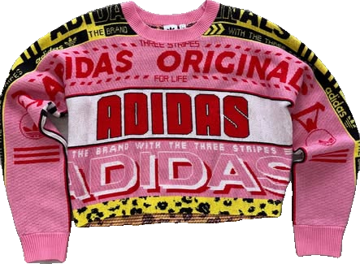
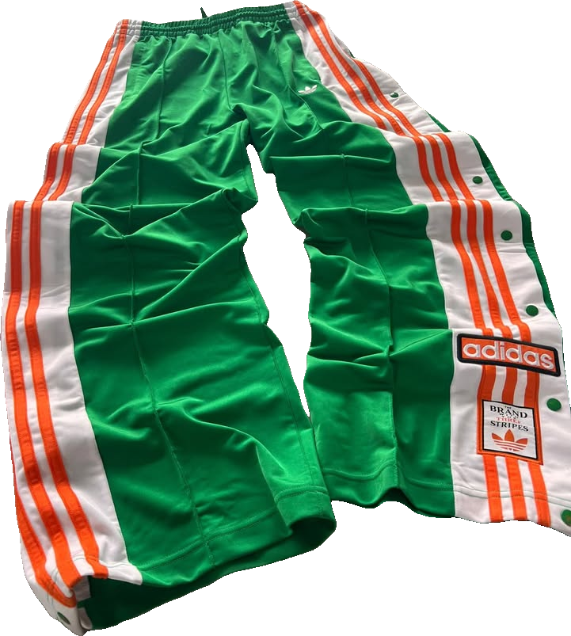
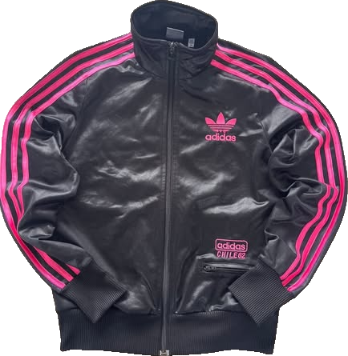

Der neue Drop.
Regelmäßige Drops aus archivierten, vergriffenen und ausverkauften Adidas-Kollektionen — von raren Velours-Pieces über Strick bis zu den Ikonen. Jeder Drop ist eine neue Chance auf streng limitierte Archiv-Pieces.

№01Knit SweaterStrick

№02AdibreakIcon

№03Chile 62Y2K
Einmal weg. Für immer weg.